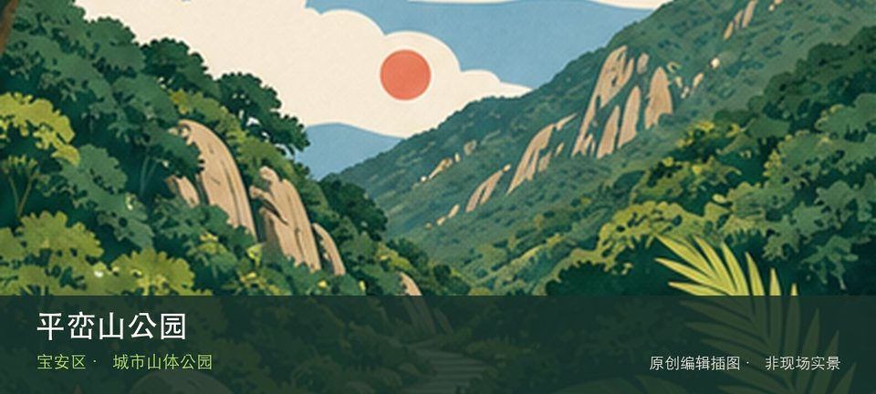

适合谁
适合有基础步行体力、愿意按天气调整路线的人；行动不便者应只选择平缓开放段。

SHENZHEN GUIDE · 159
西乡街道前进二路与宝田三路交会处 · 城市山体公园
平峦山公园位于西乡街道前进二路与宝田三路交会处，超过218公顷的城市山体公园提供连续林下登山路、眺望点和西乡片区日常健身空间。若只匆匆经过容易错过重点，平峦山连续林道与西乡城市远眺恰好构成最有辨识度的观察顺序。现场不必追求一次走完，先在平峦山连续林道与西乡城市远眺之间确定主线，再按体力、日照和天气保留折返方案。山地、滨水或林下路面会随降雨改变，当天预警和开放边界始终比旧轨迹更优先。
WHY GO
适合有基础步行体力、愿意按天气调整路线的人；行动不便者应只选择平缓开放段。
把平峦山公园拆成两段：先看平峦山连续林道，有余力再看西乡城市远眺；若开放范围与旧攻略不一致，以现场标识为准。
公共交通先到西乡街道前进二路与宝田三路交会处片区，再以平峦山公园公开参观入口为终点；多入口地点须按计划游线选择入口，并预先锁定返程站点。
导航至平峦山公园官方开放入口配套或邻近正规公共停车场；周末满位即改乘公共交通，不在绿道口、村道或消防通道临停。
10 月至次年 4 月较舒适；4—9 月湿热且雷雨集中，强降雨前后不进入山脊、溪谷、陡坡或低洼路段。
NEARBY IDEAS